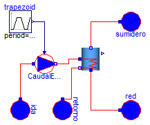

| Name | Description |
|---|---|
| Validacion_Interacumulador_02_01 | Modelo que muestra el comportamiento basico de un interacumulador |

model Validacion_Interacumulador_02_01
"Modelo que muestra el comportamiento basico de un interacumulador"
Modelica.Thermal.FluidHeatFlow.Sources.PrescribedVolumeFlow CaudalEntrada(
medium=Modelica.Thermal.FluidHeatFlow.Media.Water(), m=0.1);
Modelica.Thermal.FluidHeatFlow.Sources.Ambient ida(
medium=Modelica.Thermal.FluidHeatFlow.Media.Water(),
p_Ambient=101300,
T_Ambient=Modelica.SIunits.Conversions.from_degC(80));
Modelica.Thermal.FluidHeatFlow.Sources.Ambient retorno(medium=
Modelica.Thermal.FluidHeatFlow.Media.Water(), p_Ambient=101300);
Modelica.Thermal.FluidHeatFlow.Sources.Ambient red(medium=
Modelica.Thermal.FluidHeatFlow.Media.Water(), p_Ambient=101300);
Modelica.Blocks.Sources.Trapezoid trapezoid(
rising=10,
falling=10,
startTime=10,
offset=0,
amplitude=0.0001388,
width=3600,
period=10000);
Modelica.Thermal.FluidHeatFlow.Sources.Ambient sumidero(medium=
Modelica.Thermal.FluidHeatFlow.Media.Water(), p_Ambient=101300);
Soltermica.Acumuladores.Interacumuladores.Interacumulador_Mezcla
interacumulador_Mezcla(
medium=Modelica.Thermal.FluidHeatFlow.Media.Water(),
espec=
Soltermica.Acumuladores.Interacumuladores.CatalogoEquipos.LAPESA_CV_80_M1S(),
T_ini=293.15,
n=6,
n_int=3);
equation
connect(ida.flowPort,CaudalEntrada. flowPort_a);
connect(trapezoid.y,CaudalEntrada. VolumeFlow);
connect(CaudalEntrada.flowPort_b, interacumulador_Mezcla.flowPort_a1);
connect(retorno.flowPort, interacumulador_Mezcla.flowPort_b1);
connect(interacumulador_Mezcla.flowPort_a, red.flowPort);
connect(interacumulador_Mezcla.flowPort_b, sumidero.flowPort);
end Validacion_Interacumulador_02_01;